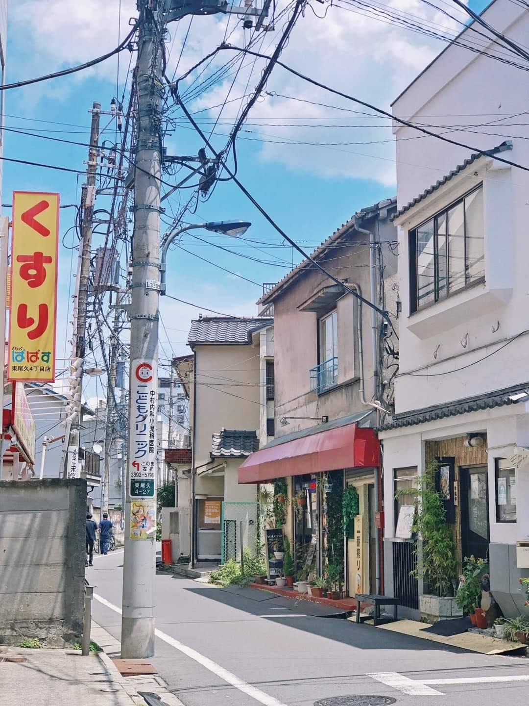
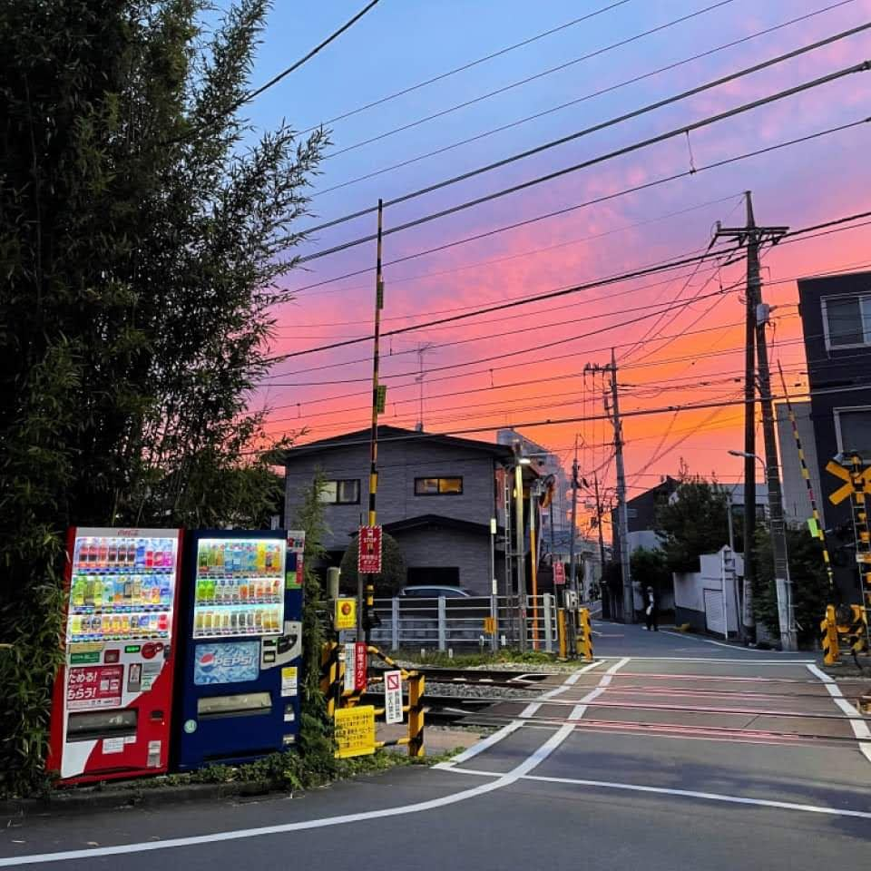

La cultura japonesa contemporánea combina influencias de Asia, Europa y América del Norte. Las artes tradicionales japonesas incluyen artesanías como cerámica, textiles, lacados, espadas y muñecos; actuaciones de bunraku, kabuki, noh, danza y rakugo; y otras prácticas, la ceremonia del té, ikebana, artes marciales, caligrafía, origami, onsen, geisha y juegos tradicionales. Japón tiene un sistema de desarrollado para la protección y promoción de bienes culturales y tesoros nacionales tangibles e intangibles. Se han inscrito veintidós sitios en la Lista del Patrimonio Mundial de la UNESCO, dieciocho de estos son de importancia cultural.
Tiene una rica gastronomia, pintura, arquitectura, deporte, en fin, el pais del sol naciente a demostrado tener una gran diversidad en su cultura , unas que veremos a continuacion; de las mas importantes que existen.

Paisaje de Japón riqueza cultural Paisaje
Arte y arquitectura
¿Como es haya?
Redactado el 17/09/2021

Geisha riqueza cultural Paisaje
La historia de la pintura japonesa exhibe síntesis y competencia entre la estética japonesa nativa y las ideas importadas.288 La interacción entre el arte japonés y europeo ha sido significativa: por ejemplo, los grabados ukiyo-e, que comenzaron a exportarse en el siglo xix en el movimiento conocido como japonismo, tuvieron una influencia significativa en el desarrollo del arte moderno en Occidente, sobre todo en el posimpresionismo. El manga japonés se desarrolló en el siglo xx y se ha vuelto popular en todo el mundo.
La arquitectura japonesa es una combinación de influencias locales y de otro tipo. Tradicionalmente se ha caracterizado por estructuras de madera, ligeramente elevadas del suelo, con techos de tejas o paja. Los Santuarios de Ise se conocen como el prototipo de la arquitectura japonesa. En las viviendas tradicionales y en muchos templos se puede observar el uso de tatamis y puertas corredizas que rompen la distinción entre las habitaciones y el espacio interior y exterior. Sin embargo, desde el siglo xix, Japón ha incorporado gran parte de la arquitectura moderna occidental en la construcción y el diseño. En cambio, no fue hasta después de la Segunda Guerra Mundial que los arquitectos japoneses dejaron una huella en la imagen internacional, primero con el trabajo de arquitectos como Kenzō Tange y luego con movimientos como el Metabolismo.
Artes escenicas
La actuacion es un arte que se puede ver muy amenudo en las zonas mas alejadas de la capital
Redactado el 17/09/2021
La música japonesa es ecléctica y diversa. Muchos instrumentos, como el koto, se introdujeron en los siglos ix y x. La música folclórica popular, con el shamisen a modo de guitarra, data del siglo xvi.305 La música clásica occidental, introducida a finales del siglo xix, forma parte integral de la cultura japonesa. El kumi-daiko (percusión conjunta) se desarrolló en el Japón de la posguerra y se hizo muy popular en América del Norte. La música popular en el Japón de la posguerra ha estado fuertemente influenciada por las tendencias estadounidenses y europeas, lo que ha llevado a la evolución del J-pop. El karaoke es una actividad cultural significativa.
Los cuatro teatros tradicionales de Japón son el noh, el kyōgen, el kabuki y el bunraku. El noh es una de las tradiciones teatrales continuas más antiguas del mundo.
Gastronomia
La cocina japonesa ofrece una amplia variedad de especialidades regionales que utilizan recetas tradicionales e ingredientes locales.
Comida riqueza cultural gastronomia
Los mariscos y el arroz o los fideos japoneses son alimentos básicos tradicionales. El curry japonés, desde que se introdujo en Japón desde la India británica, se consume tan ampliamente que puede considerarse un plato nacional, junto con el ramen y el sushi. Los dulces japoneses tradicionales se conocen como wagashi, e ingredientes como el anko y el mochi son empleados para hacerlos. Los gustos más modernos incluyen helado de té verde.